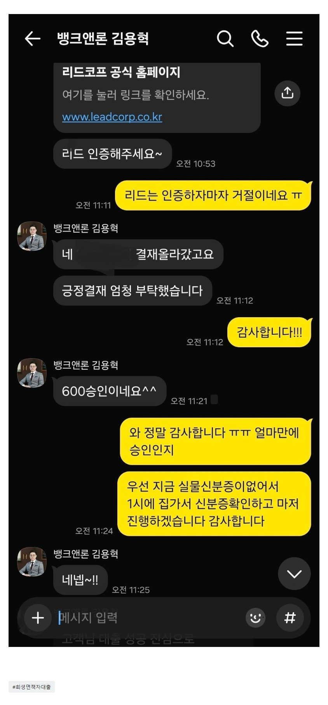

[회생면책자대출] 대부 3건 저축1건 총 4000만원 정도 있었기에 신용점수도 600점 초반에 아무곳도 대출이 안나왔는데,, 성공
올해 3월 개인회생 면책 받았습니다
하지만 기대출이 대부 3건 저축1건
총 4000만원 정도 있었기에 신용점수도 600점 초반에 아무곳도 대출이 안나왔는데
김용혁이사님이 신경써주셔서 이번에 자금 마련했습니다 감사합니다.
그리고 이현섭과장님도 서류꼼꼼하게 체크해주시고 너무 친절하십니다.

https://cafe.naver.com/cityman88/311885